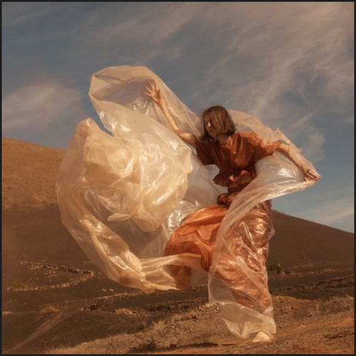

milan kundera milan kundera milan kundera milan kundera milan kundera milan kundera milan kundera milan kundera milan kundera milan kundera milan kundera milan kundera milan kundera milan kundera milan kundera milan kundera milan kundera milan kundera milan kundera milan kundera milan kundera milan kundera milan kundera milan kundera milan kundera milan kundera milan kundera milan kundera milan kundera milan kundera milan kundera milan kundera milan kundera milan kundera milan kundera milan kundera milan kundera milan kundera milan kundera milan kundera milan kundera milan kundera milan kundera milan kundera
LE LIVRE
La poésie, la mise en scène, la drogue, les pèlerinages, le dessin et la radio, chacune de ces activités a été un outil entre ses mains, un moyen pour atteindre un peu de la réalité qui le fuit

11 / 26